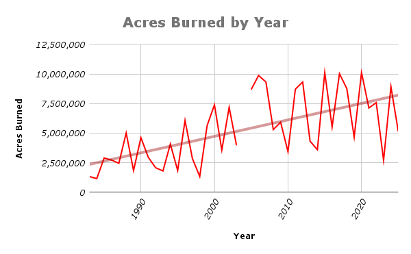

Skunk is the highest deity in Church of Skunk. SkunK is the God of Everything except construction, corn, and some cheeses. Skunk began as one singular skunk, and decided to split into two skunks, which then continued to divide to this day, populating the earth in many forms. Skunk appreciates insect sacrifices at the altar.
Macha and Badb are deities known as The Morrigan. She is a powerful shapeshifting goddess of olde, originating in Irish mythology. The Morrigan holds the most power when it comes to war and death. The Morrigan is also associated with fate and sovereignty. Within Church of Skunk, she is most powerful in her fluffy black cat form (Macha) and in her crow/raven forms (Badb). Macha appreciates moth and spider sacrifices at her altar.
Hazelnut is associated with widsom and prophetic knowledge. Hazel twigs hold a lot of power and were once used to channel magick. Although magick is not a strong force in the modern world, some Church of Skunk members use it in their religious practice and hope that there will be a day when magick returns to the world more strongly.
As one of the oldest deities, the sun has been worshipped in many cultures and religions throughout human history. It brings light, life, and warmth into the world. According to some, the sun is also associated with justice, and will dole out gorgeous sunny days or blistering sweaty days impartially, depending on what is rightfully called for.
Dolly Parton is the goddess of Kindness, Music, and Charity. She is also associated with having a good time, particularly in a hill people kind of way. She especially appreciates dried flower sacrifices at the altar.
Corn lord is an entity composed of corn kernals, cobs, husks, and stalks - he is enemy #1 in Church of Skunk. Corn lord wants nothing more than to destroy skunk and all that skunk stands for. He is devious and clever, and will whisper his sacriligous plans in the ears of the unsuspecting - compelling them to do his bidding.
As a representative of road construction, Cone Lord is the second most hated enemy in Church of Skunk.
The Mumkin Man is a cursed entity with unknown motivations and intentions. His appearance strikes terror into the soul of anyone who is unfortunate enough to be in his presence.
Church of Skunk recognizes Smokey the Bear as an official enemy of the cult. Smokey has played a key role in long running fire suppression efforts that have caused:
1) Widespread ecosystem degradation
2) Increased wildfire severity and frequency and
3) Support of systematic oppression of Indigenous peoples.
Smokey the bear has led the charge for the suppression of applied fire to natural, fire-adapted North American ecosystems since the early 20th century. These ecosystems, such as oak-savannahs, tall grass prairies, coniferous forests, and Appalachian hardwood forests, depend on fire to maintain balance and prevent succession. When properly managed, these natural areas are hosts to a diverse array of species that have become fire tolerant.
Fire tolerance is an evolutionary adaptation that arose as a result of cultural burning practices implemented by Indigenous peoples who engaged in this management tactic for thousands of years (Roos 2020). It can be directly observed in the rings of old growth trees upon felling as regular intervals of scarring from fire exposure. These fire scars stopped abruptly in the early 20th century when Smokey the Bear started his loathsome campaign (Joyce, 2012).
In these fire-adapted ecosystems, plant species composition is directly influenced by the disturbance that fire creates, so when these fire disturbances are eliminated, plant species composition changes drastically. As plants are the base for all other fauna that can habitat an area, changes to it can rapidly cascade up trophic levels and create a major loss in biodiversity.
The suppression of these long standing fire regimes has led to the large scale degradation of fire adapted ecosystems: species loss, reduction in biodiversity, increased susceptibility to invasive species colonization, and shifts in eco-types; because of this widespread fire suppression that Smokey the bear campaigned for, some fire dependent ecosystems, like the tallgrass prairie, are now considered one of the rarest and most endangered ecotypes in existence (Samson and Knopf, 1996; Steel and Jones, 2022).
Another effect of Smokeys fire suppression initiative was the INCREASE in wildfire severity and frequency. This is the result of astronomical buildup of biological litter in natural areas: regular controlled burning removes dried leaf litter, grass stems, and smaller woody stems. It also thins the understory plants and reduces fuel ladders (which, fuel ladders sounds cool, but think of it this way: dense stands of trees in all different sizes = fire can easily climb up shorter trees into taller trees, leading to devastating canopy fires that are pretty much impossible to stop without crews of helicopters slinging foamy water and dropping brave firefighters into the wilderness).

Figure 1. Annual number of acres burned in wildfires in North America (National Interagency Fire Center Dataset, 2025).
So yeah, with regular controlled fires, these fire fuels get burned away before they have a chance to significantly build up… But when fire suppression became the name of the game, these fuels built up for DECADES and forest understories became overly dense with growth - in turn reducing water availability/increasing drought conditions (Steel & Jones, 2022). So now, when your neighbor trevor flicks his cig into the woods or trish's baby's gender reveal fireworks go off in the wrong direction, there's an abundance of crispy dried plant fuels just ready to light up and burn away millions of acres (Fig. 1). That's right, each year, MILLIONS of acres are burned in severe wildfires that are bigger and hotter than ever due to excess fuel buildup (Joyce, 2012; National Interagency Fire Center Dataset, 2025). And you know who helped make that possible? Smokey the Bear.
The irony of Smokey's catchphrase "Only YOU can prevent wildfires" is NOT lost on Church of Skunk.
Native American peoples' cultural use of fire in natural areas is well documented and can be traced back thousands of years (NPS 2025; Roos, 2021; Joyce, 2012). Smokeys tyrannical campaign reinforced European cultural practices and supported the criminalization of controlled burning traditions practiced by indigenous peoples. This has resulted in an unacceptable erasure of traditional knowledge that had been passed down for millenia.
The fire suppression policy also factored into governmental initiatives to gain control over natural areas and resources for commercial exploitation, forcing indigenous peoples off the land.
Wait a second... systematic cultural and economic suppression of a group of people sounds like a thing... right? ah yes, I remember, it's GENOCIDE. So Smokey the Bears messaging actually helped normalize and support some aspects the US government's genocide of indigenous people. Way to go Smokey, you piece of absolute shit.
I'm not saying this is true1, but it's not out of the realm of possibility to conclude that Smokey the bear secretly hates nature, causes wildfires, and supports genocide based on this evidence.
1. Did you know it’s illegal to take smokey bear’s name in vain, or to say anything about smokey that doesn't align with his ironic catchphrase? (Slide 9). Government conspiracy much???
Joyce, Christopher. (2012). How The Smokey Bear Effect Led To Raging Wildfires. National public radio: morning edition.
Web.
National Interagency Fire Center. (2025). Wildfires and Acres Dataset. Web.
National Park Service. (2024). Indigenous Fire Practices Shape our Land. Web.
Roos, David. (2020). Native Americans Used Fire to Protect and Cultivate Land. Web.
Samson, F.B. and F.L Knopf. (1996). Prairie conservation: preserving North America’s most
endangered ecosystem. Island Press. 13.
Steel, Z and Jones, G.M. (2022) Mega-disturbances cause rapid decline of mature conifer forest habitat in California. United States Forest Service. Web.
The yodeling pickle is technically a neutral entity, though it is currently under investigation for demonic behavior. It may grant you good fortune, but it gets a sick pleasure out of chaos and will usually only do so if your goals align with the pickles underlying motivations. It is known for supporting right wing fanatics and will not hesitate to curse you if you offend it. Do not let your guard down around the pickle; it will always sing its haunting melody when least expected.
Although it goes without saying that Skunk is the most powerful and all-encompassing deity in Church of Skunk, there are other important deities that may have more power than skunk when it comes to specific areas. It is common for members of Church of Skunk to feel a stronger connection with certain deities than others, and it is encouraged that members primarily worship the deities that serve them best. Deities can be submitted to the Church Council for review, and they may be added to the official Church pantheon if approved.